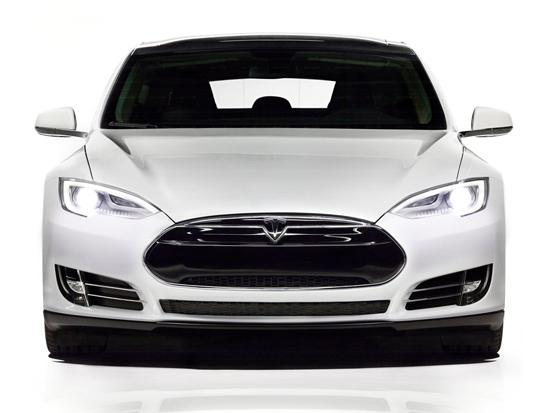

Historia De Automoviles Tesla
Tesla Motors es una compañía norteamericana creada en 2003 en San Carlos, California, Estados Unidos, Bajo el mando de Elon Musk, fabrica y comercializa vehículos, así como componentes y baterías para otros fabricantes como el grupo Daimler o Toyota. Tomando el nombre del físico e ingeniero Nikola Tesla, desarrolla motores de inducción creando sistemas compactos y con un número inferior de piezas móviles que un motor térmico convencional. Así mismo, la compañía cuenta con patentes propias para su fabricación, las cuales han sido liberadas al público desde 2014.
El objetivo principal de Tesla Motors es comercializar vehículos totalmente eléctricos, incluyendo berlinas, deportivos y compactos asequibles. El Tesla Roadster fue el primer vehículo de la compañía, un deportivo completamente eléctrico, pionero en el empleo de baterías de Ion-Litio con autonomías de más de 300 kilómetros por carga. Los primeros prototipos fueron mostrados al público en 2006 y actualmente ostenta el récord mundial de autonomía en un vehículo eléctrico de fabricación masiva con 501 kilómetros. Entre 2008 y 2012, la compañía pone en circulación más de 2000 unidades en todo el mundo. Tras finalizar la producción del Roadster, Tesla continua presente en el mercado con vehículos que combinan la última tecnología en desarrollo, así como diseño, calidad y representación.